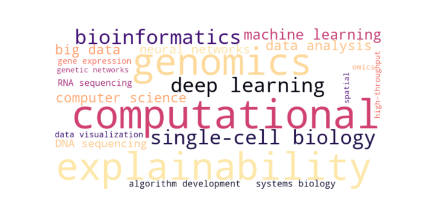

We develop computational methods for investigating cellular heterogeneity, gene regulation, and tissue organization through single-cell and spatially resolved omics technologies. Our research focuses on the analysis and integration of transcriptomic, epigenomic, and spatial molecular data to characterize cellular populations, identify regulatory interactions, and uncover the mechanisms governing complex biological processes. By combining advanced statistical approaches, network-based analysis, and machine learning, we aim to move beyond descriptive molecular profiling toward systems-level understanding of cellular function and disease. Particular emphasis is placed on applications in cancer biology, immunology, and precision medicine.
We develop computational methods for investigating cellular heterogeneity, gene regulation, and tissue organization through single-cell and spatially resolved omics technologies. Our research focuses on the analysis and integration of transcriptomic, epigenomic, and spatial molecular data to characterize cellular populations, identify regulatory interactions, and uncover the mechanisms governing complex biological processes. By combining advanced statistical approaches, network-based analysis, and machine learning, we aim to move beyond descriptive molecular profiling toward systems-level understanding of cellular function and disease. Particular emphasis is placed on applications in cancer biology, immunology, and precision medicine.
We investigate and develop advanced machine learning and deep learning methodologies for extracting meaningful information from complex, high-dimensional datasets. Our research encompasses neural network architectures, representation learning, predictive modeling, and XAI, with applications spanning computational genomics, biological systems, and industrial processes. A central objective is to bridge predictive performance and scientific interpretability by identifying the features, patterns, and relationships underlying model predictions. We are particularly interested in integrating domain knowledge with data-driven approaches to develop robust, transparent, and generalizable models that support scientific discovery, hypothesis generation, and informed decision-making.
We promote the adoption of FAIR (Findable, Accessible, Interoperable, and Reusable) principles and Open Science practices throughout the scientific data lifecycle. Our research focuses on developing computational solutions for the harmonization, integration, management, and dissemination of heterogeneous scientific datasets, with particular emphasis on metadata standardization, semantic interoperability, provenance tracking, and reproducibility. We contribute to the development of open and reusable software tools, analytical workflows, and data services that facilitate transparent and collaborative research. Our overarching objective is to transform fragmented scientific resources into accessible, interoperable, and reusable knowledge assets that accelerate research and innovation across the life sciences.
We design and develop scalable computational infrastructures that enable the integration of scientific data, analytical tools, and advanced modeling services within distributed research environments. Through our involvement in European research initiatives, including activities supporting the IBISBA research infrastructure, we contribute to the development of interoperable data platforms, scientific workflow orchestration frameworks, and cloud-native computational services. Our research emphasizes containerized execution, distributed computing, standardized interfaces, and the reproducible deployment of computational workflows. We aim to establish flexible and sustainable digital ecosystems that connect experimental research with advanced computational analysis, supporting data-intensive scientific applications across biotechnology and the broader life sciences.